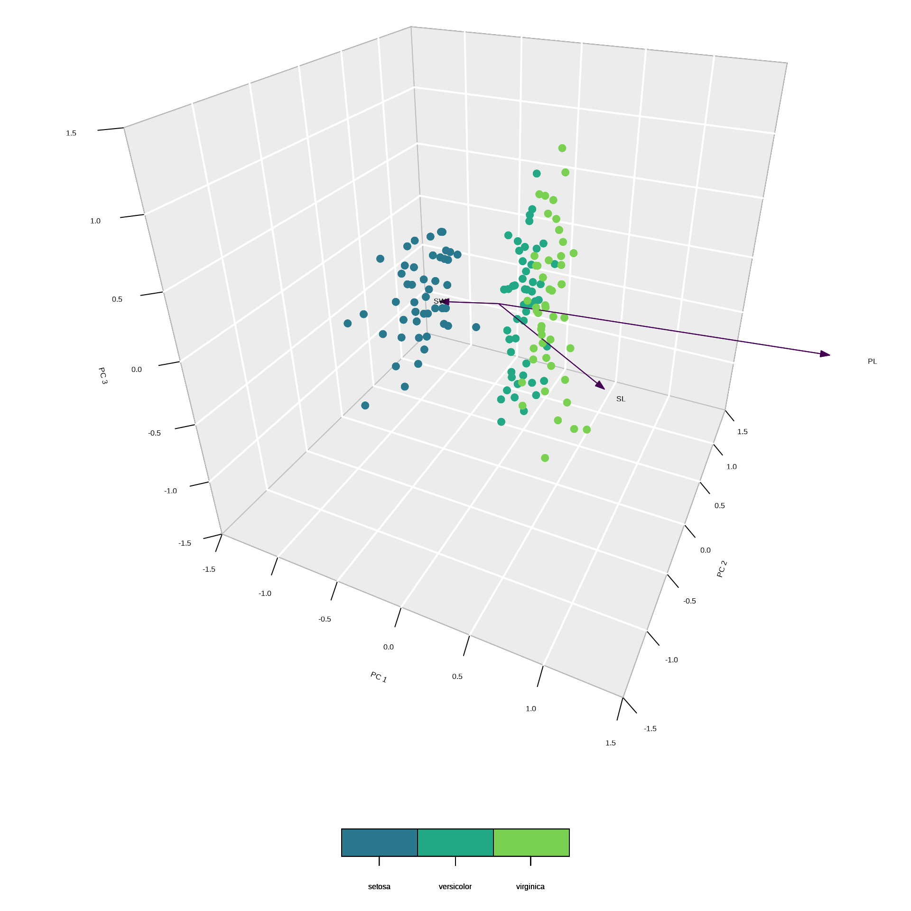

2024 / 05 / 15
Principal component analysis (PCA) is a method to find new variables (i.e., principal components) that are linear functions of the original variables. The new variable should successively maximizes variance and should not be correlated with each other. The principal components are found by eigenanalysis (Jolliffe and Cadima 2016; Hotelling 1933; Pearson 1901).
PCA1 is the eigenanalysis2 of the \(p\times p\) variance – covariance matrix3 \(\Sigma\)
\[ \mathbf{\Sigma} = \frac{\mathbf{Y_c}^\top \mathbf{Y_c}}{n-1} \]
\[ \overbrace{\begin{bmatrix}2.25 & 2.00 & 2.00\\-1.75 & 0.00 & -2.00\\ 0.25 & -1.00 & -2.00\\-0.75 & -1.00 & 2.00\end{bmatrix}}^{\mathbf{Y_c}} = \overbrace{\begin{bmatrix}5 & 4 & 5\\1 & 2 & 1\\3 & 1 & 1\\2 & 1 & 5\end{bmatrix}}^{\mathbf{Y}} - \overbrace{\begin{bmatrix}2.75 & 2.00 & 3.00\\2.75 & 2.00 & 3.00\\2.75 & 2.00 & 3.00\\2.75 & 2.00 & 3.00\end{bmatrix}}^{\overline{\mathbf{Y}}} \]
\(\mathbf{Y}\) is the original data, \(\overline{\mathbf{Y}}\) is the column-means of \(\mathbf{Y}\).
The eigenanalysis of \(\Sigma\) is defined as the following:
\[ \frac{\mathbf{Y_c}^\top \mathbf{Y_c}}{n-1} = \mathbf{\Sigma} = \mathbf{V}_{pca}\mathbf{L}\mathbf{V}_{pca}^\top \]
where, \(\mathbf{V}_{pca} = \begin{bmatrix}\mathbf{v_1} & \mathbf{v_2} & \cdots & \mathbf{v_p}\end{bmatrix}\) is a matrix of \(p\) eigenvectors1 and \(\mathbf{L}\) is a diagonal matrix of the eigenvalues2. Each \(\mathbf{v_i}\) is also known as the \(i\)th principal component3.
The eigenvalue matrix is a \(p\times p\) diagonal matrix1.
\[ \mathbf{L} = \begin{bmatrix} \lambda_1 & 0 & 0 & \cdots & 0 \\ 0 & \lambda_2 & 0 & \cdots & 0 \\ \vdots & & \ddots & \ & \vdots \\ 0 & 0 & 0 & \cdots & \lambda_p \\ \end{bmatrix} \]
Instead of solving \(\frac{\mathbf{Y_c}^\top \mathbf{Y_c}}{n-1} = \mathbf{\Sigma} = \mathbf{V}_{pca}\mathbf{L}\mathbf{V}_{pca}^\top\) (i.e., eigenanalysis1), it is easier to do a singular value decomposition (SVD)2.
\[ \mathbf{Y_c} = \mathbf{U}\mathbf{D}\mathbf{V}_{svd}^\top \]
\[ \mathbf{Y_c} = \mathbf{U}\mathbf{D}\mathbf{V}_{svd}^\top \]
\(\mathbf{U}\) is the left singular vectors1 of \(\mathbf{Y_c}\) and are the eigenvectors of \(\mathbf{Y_c}\mathbf{Y_c}^\top\).
\[ \mathbf{Y_c} = \mathbf{U}\mathbf{D}\mathbf{V}_{svd}^\top \]
\(\mathbf{D}\) is a diagonal matrix of the singular values1.
\[ \mathbf{Y_c} = \mathbf{U}\mathbf{D}\mathbf{V}_{svd}^\top \]
\(\mathbf{V}_{svd}\) is the right singular vectors1 of \(\mathbf{Y_c}\) and are the eigenvectors of \(\mathbf{Y_c}^\top\mathbf{Y_c}\).
To find the eigenvalue, we must solve for \(\mathbf{\Sigma}\).
\[ \mathbf{\Sigma} = \frac{\mathbf{Y_c}^\top \mathbf{Y_c}}{n-1 } \]
\[ \mathbf{Y_c} = \mathbf{U}\mathbf{D}\mathbf{V}_{svd}^\top \]
\[ \begin{aligned} \mathbf{\Sigma} &= \frac{\mathbf{Y_c}^\top \mathbf{Y_c}}{n-1 }\\ & \mathbf{Y_c} = \mathbf{U}\mathbf{D}\mathbf{V}_{svd}^\top \\ \mathbf{\Sigma} &= \frac{(\mathbf{U}\mathbf{D}\mathbf{V}_{svd}^\top )^\top (\mathbf{D}\mathbf{S}\mathbf{V}_{svd}^\top )}{n-1 } \\ \mathbf{\Sigma} &= \frac{\mathbf{V}_{svd}\mathbf{D}^\top\mathbf{U}^\top \mathbf{U} \mathbf{D} \mathbf{V}_{svd}^\top}{n-1 }\\ \end{aligned} \]
Since \(\mathbf{U}^\top\mathbf{U}=1\),
\[ \mathbf{\Sigma} = \frac{\mathbf{V}_{svd}\mathbf{D}^\top \mathbf{D} \mathbf{V}_{svd}^\top}{n-1 } = \mathbf{V}_{pca}\mathbf{L}\mathbf{V}_{pca}^\top \]
and \(\mathbf{V}^\top\mathbf{V}=1\),
\[ \mathbf{\Sigma} = \frac{\mathbf{D}^\top\mathbf{D}}{n-1} = \mathbf{L} \]
or more simply, \(\lambda_i = \frac{d_i^2}{n-1}\).
The rotation angle \(\theta\) can also be determined from the rotation vector as follows: \(\mathbf{V}_\text{svd} = \begin{bmatrix} \cos\theta & -\sin\theta\\ \sin\theta & \cos\theta\\ \end{bmatrix}\).
Apply SVD to the previous example results in the following equation.
\[ \overbrace{\begin{bmatrix}2.25 & 2.00 & 2.00\\-1.75 & 0.00 & -2.00\\ 0.25 & -1.00 & -2.00\\-0.75 & -1.00 & 2.00\end{bmatrix}}^{\mathbf{Y_c}} = \overbrace{\begin{bmatrix}-0.73 & 0.43 & -0.15\\ 0.526 & 0.078 & -0.683\\0.39 & 0.33 & 0.70\\-0.18 & -0.84 & 0.13\end{bmatrix} }^{\mathbf{U}}\times \overbrace{\begin{bmatrix}4.66 & 0.00 & 0.00\\0.00 & 2.63 & 0.00\\0.00 & 0.00 & 1.47\end{bmatrix} }^{\mathbf{D}}\times \overbrace{\begin{bmatrix}-0.50 & -0.36 & -0.79\\ 0.59 & 0.52 & -0.62\\ 0.633 & -0.772 & -0.051\end{bmatrix} }^{\mathbf{V}^\top} \]
Calculate the centered data matrix.
SL SW
1 0.094 0.072
2 -0.106 -0.428
3 -0.306 -0.228
4 -0.406 -0.328
5 -0.006 0.172
6 0.394 0.472Calculate the eigenvectors, eigenvalues, and singular values using svd().
Recall that,
\[ \lambda_i = \frac{d_i^2} {n-1} \]
Therefore, the eigenvalues are 0.2337 and 0.0343.
The eigenvectors are:
The total variance before rotation is:
and should be the same as the total inertia (i.e., variance) after rotation:
The variance of SL and SW is:
The relative importance of SL and SW is:
However, the variance of the principal components and their relative importance is different:
Scores1 are the data points projected onto the principal component axes.
Loadings (rescaled loadings)1 indicates the relationship of the variable with the principal component axes.
PC1 PC2
SL -0.3247134 -0.1371501
SW -0.3580809 0.1243699Therefore, for variable SL, the loadings on PC1 and PC2 are -0.325 and -0.137, respectively. The cosine of the angle between loadings are their correlation.
vegan::rda()First run the analysis with both rda() and `svd().
Left singular matrix1
[,1] [,2]
[1,] -0.03442408 -0.01640983
[2,] 0.11474404 -0.16125450
PC1 PC2
1 -0.03442408 -0.01640983
2 0.11474404 -0.16125450Right singular matrix2
vegan::rda()Eigenvalues
Call:
rda(X = Yc)
Partitioning of variance:
Inertia Proportion
Total 0.2679 1
Unconstrained 0.2679 1
Eigenvalues, and their contribution to the variance
Importance of components:
PC1 PC2
Eigenvalue 0.2337 0.03428
Proportion Explained 0.8721 0.12793
Cumulative Proportion 0.8721 1.00000
Scaling 2 for species and site scores
* Species are scaled proportional to eigenvalues
* Sites are unscaled: weighted dispersion equal on all dimensions
* General scaling constant of scores: vegan-like analysisIn vegan::rda(), the scores are scaled according to the following:
The constant term is \(C = \sqrt[4]{(n -1)\sum{\lambda_i}}\).
See the decision-vegan.pdf vignette for details.
Scaling 1
\[ \mathbf{U}_1 = \mathbf{U} \times \begin{bmatrix} \frac{\sqrt{\lambda_1}}{\sum\lambda_k} & 0 & 0 & \cdots & 0\\ 0 & \frac{\sqrt{\lambda_2}}{\sum\lambda_k} & 0 & \cdots & 0\\ 0 & 0 & \ddots & \cdots & 0 \\ 0 & 0 & 0 & \cdots & \frac{\sqrt{\lambda_k}}{\sum\lambda_k} \\ \end{bmatrix} \times \sqrt[4]{(n -1)\sum{\lambda_k}} \]
Scaling 2
\[ \mathbf{U}_2 = \mathbf{U} \times \sqrt[4]{(n -1)\sum{\lambda_k}} \]
\(\mathbf{U}_1\) and \(\mathbf{U}_2\) are the scaled scores.
The unscaled principal components are in the matrix \(\mathbf{U}\). The black circles indicate the vegan::rda() output and the colored dots indicate the results based on the SVD.
limits = c(-0.5, 0.5)
tmp = scores(rdaout, scaling = "none", display = "species")
tmp = tmp %*% diag(1/diag(sqrt(tmp %*% t(tmp)))) / 2
scores(rdaout, scaling = "none", display = "sites") |>
plot(cex = 1.5, xlim = limits, ylim = limits)
points(umat[,1], umat[,2], pch = 19, col = "blue", cex = 0.5)
segments(c(0,0), c(0,0), tmp[,1], tmp[,2])
text(tmp[,1], tmp[,2], labels = rownames(tmp))The scaled principal components are in the matrix \(\mathbf{U}_1\). The black circles indicate the vegan::rda() output and the colored dots indicate the results based on the SVD. Distances between dots indicate approximate euclidean distances \((d = \sqrt{x^2+y^2})\)1.
limits = c(-1, 1)
tmp = scores(rdaout, scaling = 1, display = "species")
tmp = tmp %*% diag(1/diag(sqrt(tmp %*% t(tmp))))
scores(rdaout, scaling = 1, display = "sites") |>
plot(cex = 1.5, xlim = limits, ylim = limits)
points(umat1[,1], umat1[,2], pch = 19, col = "blue", cex = 0.5)
segments(c(0,0), c(0,0), tmp[,1], tmp[,2])
text(tmp[,1], tmp[,2], labels = rownames(tmp))The scaled principal components are in the matrix \(\mathbf{U}_2\). The black circles indicate the vegan::rda() output and the colored dots indicate the results based on the SVD. Angles between vectors (radians) indicate correlation.
limits = c(-1.5, 1.5)
tmp = scores(rdaout, choices = c(1,2), scaling = 2, display = "species")
tmp = tmp %*% diag(1/diag(sqrt(tmp %*% t(tmp))))
scores(rdaout, scaling = 2, display = "sites") |>
plot(cex = 1.5, xlim = limits, ylim = limits)
points(umat2[,1], umat2[,2], pch = 19, col = "blue", cex = 0.5)
segments(c(0,0), c(0,0), tmp[,1], tmp[,2])
text(tmp[,1], tmp[,2], labels = rownames(tmp))
Call:
rda(X = Yc)
Partitioning of variance:
Inertia Proportion
Total 3.992 1
Unconstrained 3.992 1
Eigenvalues, and their contribution to the variance
Importance of components:
PC1 PC2 PC3
Eigenvalue 3.6911 0.24138 0.05945
Proportion Explained 0.9246 0.06047 0.01489
Cumulative Proportion 0.9246 0.98511 1.00000
Scaling 2 for species and site scores
* Species are scaled proportional to eigenvalues
* Sites are unscaled: weighted dispersion equal on all dimensions
* General scaling constant of scores: PC1 explains 92.46 % of the inertia, therefore most of the variation occurs along the PC1 axis.
The correlation between two vectors is determined as
\[ \begin{aligned} \cos\theta &= \frac{v_1\cdot v_2}{\lVert v_1 \rVert \lVert v_2 \rVert} \\ \sin\theta &= \frac{\lVert v_1\times v_2 \rVert}{\lVert v_1 \rVert \lVert v_2 \rVert} \\ \tan\theta &= \frac{\lVert v_1\times v_2\rVert}{v_1 \cdot v_2 } \\ \end{aligned} \]
The correlation between two vectors is the cosine of the angle between the vectors.
\[ \cos\theta = \frac{v_1\cdot v_2}{\lVert v_1 \rVert \lVert v_2 \rVert} \]
\[ \cos\theta = \frac{v_1\cdot v_2}{\lVert v_1 \rVert \lVert v_2 \rVert} \]
\[ \begin{aligned} v_1 &= \begin{bmatrix} 1.85 & -0.78 & -0.40 \end{bmatrix} \\ v_2 &= \begin{bmatrix} -0.43 & -0.90 & 0.40 \end{bmatrix} \\ \lVert v_1\rVert &= \sqrt{\begin{bmatrix} 1.85 & -0.78 & -0.40 \end{bmatrix} \begin{bmatrix} 1.85 \\ -0.78 \\ -0.40 \end{bmatrix}} = 2.05 \\ \lVert v_2\rVert &= \sqrt{\begin{bmatrix} -0.43 & -0.90 & 0.40 \end{bmatrix} \begin{bmatrix} -0.43 \\ -0.90 \\ 0.40 \end{bmatrix}} = 1.08 \\ \end{aligned} \]
\[ \cos\theta = \frac{\begin{bmatrix} 1.85 & -0.78 & -0.40 \end{bmatrix} \begin{bmatrix} -0.43 \\ -0.90 \\ 0.40 \end{bmatrix}}{2.05 \times 1.08} \]
\[ \cos\theta = \frac{-0.26}{2.05 \times1.08} = -0.12 \] The correlation between the two vectors is -0.12. The angle between the two vectors is \(\cos^{-1}(\text{-0.1176}) =\) 1.6886 radians, or 96.7519\({}^\circ\).
Isolate the vectors.
Calculate \(\cos\theta\).
[,1]
[1,] -0.1175698
[,1]
[1,] 0.8717538
[,1]
[1,] -0.4284401It is easier to calculate the correlations on the original centered data.
To determine the correlations of each variable with respect to the principal component axes, use the function.
SL SW PL
PC1 0.9044678 0.9044678 0.9044678
PC2 -0.3792589 -0.3792589 -0.3792589
PC3 -0.1951939 -0.1951939 -0.1951939The SL and PL vectors are positively correlated with PC1 (0.9045 and 0.9045, respectively). Whereas the SW vector is negatively correlated with PC2 (-0.3793).
https://qiita.com/horiem/items/71380db4b659fb9307b4
https://stats.stackexchange.com/questions/141085/positioning-the-arrows-on-a-pca-biplot